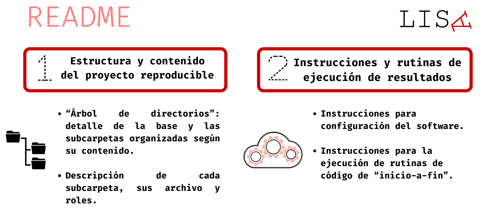
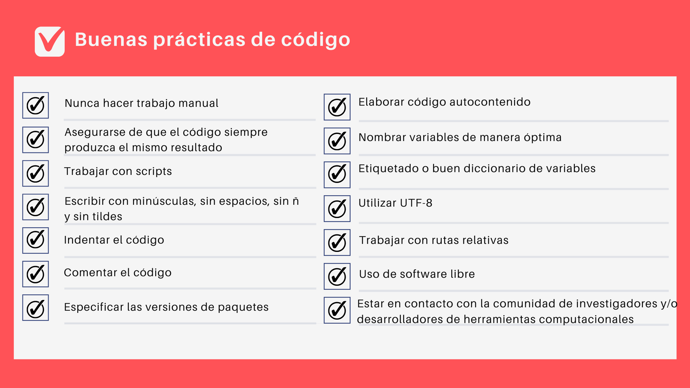
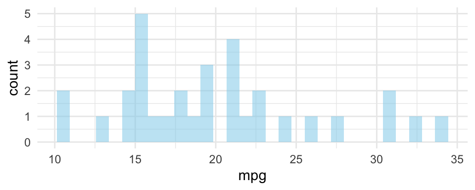
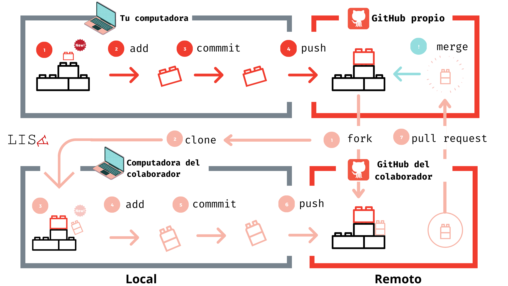

¿Cuántas veces nos hemos enfrentado a un trabajo publicado que no comparte sus materiales, y que por tanto, es imposible acceder a los procedimientos que dieron luces a sus resultados? En este contexto, la reproducibilidad entendida como la posibilidad de regenerar de manera independiente los resultados usando los materiales originales de una investigación publicada. ¿Cómo organizamos un proyecto con análisis reproducibles? ¿Qué herramientas puedo utilizar? ¿Cómo puedo compartir mis materiales? En este blog daremos algunas orientaciones generales respecto a cómo avanzar en esta dirección.
¿Cuáles son los pasos a seguir?
Un proyecto reproducible no se reduce solamente a un buen código, sino que considera la vinculación entre los distintos elementos del proyecto que nos permitan regenerar los resultados de un estudio original. Por lo tanto, hemos organizado esta guía en cuatro pasos:
1. Estructura del proyecto: la organización de los elementos de un proyecto es clave para lograr un estándar mínimo de reproducibilidad. Esto implica que tanto los materiales iniciales como los datos y rutinas de código deben estar correctamente vinculados para obtener los resultados.
2. Prácticas de código: la calidad de una hoja de código puede ser clave en lograr la regeneración de resultados. Por este motivo, cuestiones como los comentarios, indentación y organización del código son necesarias para un proyecto reproducible.
3. Documentos dinámicos: la combinación de escritura en texto plano con el código de análisis hace de los documentos dinámicos una herramienta clave para la reproducibilidad dado que nos permiten generar reportes autocontenidos.
4. Control de versiones: saber qué, quién y cuándo se ha realizado un cambio en nuestro proyecto, además del uso de repositorios públicos contribuye a realizar el seguimiento de un proyecto y así también identificar problemas para reproducir los resultados como también para colaborar de manera eficiente.
Paso 1: Estructura del proyecto
La forma en que están organizadas las partes de un proyecto es fundamental para cumplir a cabalidad con el objetivo de hacerlo reproducible. Esta organización se puede sintetizar como un esquema que involucra tres elementos: (1) Input, (2) Procesamiento y (3) Output.
Este esquema se basa en una versión dell Protocolo IPO (Input-Procesamiento-Output) que se propone abordar brevemente todo lo referente a los Datos, Métodos y Resultados.
🗸 Si deseas saber más sobre el Protocolo IPO puedes hacer click aquí:
Carpeta Raíz
Para la organización de un proyecto, debemos pensar en una estructura digital de carpetas y subcarpetas. La carpeta raíz es donde se alberga toda la información de referencia para el proyecto, la cual tiene por objetivo:
Documentar: expone ordenadamente el contenido del proyecto de manera jerárquica (carpetas y subcarpetas).
Orientar: instruye al usuario para una correcta ejecución de rutinas de código que permita regenerar los resultados de la investigación.
Estas instrucciones pueden ir incluidas en un archivo README organizado de la siguiente manera:

🗸 Para mayores detalles respecto al contenido y estructura de un proyecto reproducible, puedes hacer click aquí:
Input (I)
Si bien los protocolos varían de acuerdo a cómo se organizan los datos dentro de la carpeta raíz (i.e. en qué carpeta se alojan), algo que suele ser común entre los protocolos es la diferenciación entre los datos originales o “brutos” (raw data) y los datos procesados. El albergar ambas versiones permite identificar los cambios generados a través del procesamiento.
Para toda fuente de datos original, se debe proveer la siguiente información:
- Citación bibliográfica en un formato estándar
- Fecha de creación de la base de datos
- Descripción respecto a cómo se puede acceder a una copia de la base de datos
- Libro de códigos de todas las variables de la base de datos.
🗸 Para mayor detalle sobre la sección de datos, puedes hacer click aquí:
📝 Procesamiento (P)
Con Pocesamiento nos referimos a todos los procedimientos del proyecto relacionados con la (1) preparación y (2) análisis de datos.
(1) Preparación
La preparación de los datos cumple una función clave para el desarrollo de un artículo: la de generar los datos que emplearemos en análisis del estudio. Considerando esto, el objetivo final de este documento es generar una base de datos procesada, que contenga solamente los datos importantes para analizar.
Sugerimos seguir el siguiente flujo para realizar la preparación de los datos:
| Procedimientos | Descripción |
|---|---|
| 1. Descriptivo inicial | Calcular una tabla de frecuencias o de medidas de tendencia central y dispersión para conocer el estado de la variable previo a cualquier modificación |
| 2. Recodificación | Recodificación de los datos perdidos y otro tipo de valores a modificar (e.g. errores de tipeo) |
| 3. Etiquetado | Una base bien documentada trae etiquetas predeterminadas que hacen alusión a las preguntas del cuestionario |
| 4. Descriptivo final | Revisar de nuevo las frecuencias o las medidas de tendencia central de las variables, para diagnosticar que no hemos cometido errores en el procesamiento |
| 5. Otros ajustes | Efectuar toda modificación específica y relevante para la forma que analizaremos los datos |
El seguir este flujo de manera sistemática facilitará la lectura tanto para terceros, como para nosotros mismos en el futuro.
(2) Análisis
- Una vez contamos con nuestra base de datos procesada podemos analizar los datos. En el documento de análisis de datos se procede a elaborar todas las tablas, gráficos y pruebas estadísticas que vayan a ser incluidas en el artículo final. En términos generales las secciones son
- Análisis descriptivos univariados de los datos.
- Análisis bivariado de los datos.
- Análisis multivariado.
Documentación
Para lograr una correcta ejecución de los documentos de preparación y análisis es clave tener correctamente explicado cómo utilizarlos y cómo se vinculan entre ellos. Para esto, sugerimos que documento README incluya las siguientes indicaciones:
Ejecución de la preparación: Precisar la ubicación de la o las fuentes de datos originales.
Cierre de la preparación: Precisar la ruta donde se deben almacenar la base de datos procesada.
Ejecución de análisis: Precisar el origen de la base de datos procesada.
Archivos del análisis de datos: Precisar ruta de almacenamiento y nombre.
🗸 Más información sobre la sección de métodos, puedes hacer click aquí:
📊 Output (O)
Con Output, nos referimos a todo elemento obtenido del análisis de datos. Habitualmente toman la forma de figuras, gráficos o tablas. Es habitual que los protocolos sugieran que estos archivos se almacenen en una subcarpeta exclusiva para ello. Por este motivo, sugerimos se sigan las siguientes indicaciones:
🔴 Para imágenes, sugerimos usar nombres breves e incorporar numeración. Por ejemplo “figura01.png”, siguiendo el orden de aparición en la publicación.
🔴 Para tablas, sugerimos emplear nombres cortos e incorporar numeración. Por ejemplo, “tabla01.xls”, según el orden de aparición en la publicación.
Paso 2: Prácticas de código
La escritura de un código de preparación o análisis requiere adoptar estándares mínimos, entre otras cosas, para facilitar la comprensión y ejecución de una rutina de código por otros usuarios que busquen regenerar nuestros resultados.
La figura a continuación muestra algunas buenas prácticas de código que contribuyen a hacer el trabajo más transparente, y son aplicables a lenguajes de programación:

Paso 3: Uso de documentos dinámicos
Los documentos dinámicos son una herramienta que incorpora lo mejor de dos mundos: documentos en texto plano y código de análisis.
🔴 Por un lado, trabajar con texto plano implica independencia de cualquier software comercial o plataformas específicas. Adicionalmente, un documento dinámico permite centrarnos en el contenido y menos en el formato, dado que existen distintas opciones para ello (p.ej. .pdf o .html).
🔴 Finalmente, al incorporar código de análisis es posible generar documentos autocontenidos, es decir, no es necesario recurrir a imágenes o tablas externas, sino que es posible generarlas en el mismo documento.
Por ejemplo, este documento está escrito en R Markdown, lo que nos permite demostrar cómo combinar código en R con texto plano.
Así se ve el código en nuestro documento:
library(ggplot2)
ggplot(mtcars, aes(x=mpg)) +
geom_histogram(fill="skyblue",
alpha=0.5) +
theme_minimal()Luego, el código se ejecuta y obtenemos el siguiente gráfico:

Usar documentos dinámicos escritos en texto plano abre un abanico de posibilidades cuando buscamos avanzar hacia proyectos con análisis reproducibles. En este sentido, nos gustaría destacar tres opciones:
🗸 Si deseas saber más sobre cómo funcionan los documentos dinámicos, puedes hacer click aquí:
Paso 4: Control de versiones
A modo global, el control de versiones nos permite rastrear los cambios en un documento o conjunto de archivos, es decir, saber cuáles/qué, quién y cuándo se han realizado cambios.
Al trabajar colaborativamente existen diferentes (y poco eficientes) maneras de controlar versiones. Por ejemplo:
❌ Fechas: codigo_2021-03-01.R → codigo_2021-05-02.R
❌ Numeración: analisis_v02.do → analisis_v05.do
No obstante, hoy en día existen sistemas de control de versiones especializados para el trabajo de programación. Al respecto, nuestra sugerencia es emplear versionamiento basado en , pero ¿qué es Git? Te lo explicamos a continuación.
Git y GitHub
Git es un sistema de control de versiones de código abierto, tiene por objetivo hacer más eficiente el flujo de trabajo para proyectos de desarrollo de software. Algunas de sus principales características son:
⭕ Permite registrar (snapshot) la versión de una carpeta completa y su contenido
⭕ Registra qué, quién y cuándo se realizaron cambios
⭕ Uso de repositorios (repos) locales (computadora) o remotos (online)
A la par existe GitHub, el cual es una plataforma de desarrollo colaborativo para hospedar proyectos que utilizan control de versiones basado en Git. Una de sus principales características es el uso de repositorios locales y remotos. La siguiente figura muestra un ejemplo:

Recomendamos el uso de Git y Github cómo flujo de trabajo para aquellos científicos sociales que trabajan con datos cuantitativos, especialmente cuando son grandes equipos de investigación o son proyectos con varias colaboraciones.
🗸 Si deseas conocer más sobre Git y GitHub te invitamos a revisar la sesión del curso “Ciencia Social Abierta”:
En síntesis
🔴 Si deseas revisar más detalles de cómo elaborar un proyecto reproducible, en el siguiente video se detalla el paso a paso para ello: